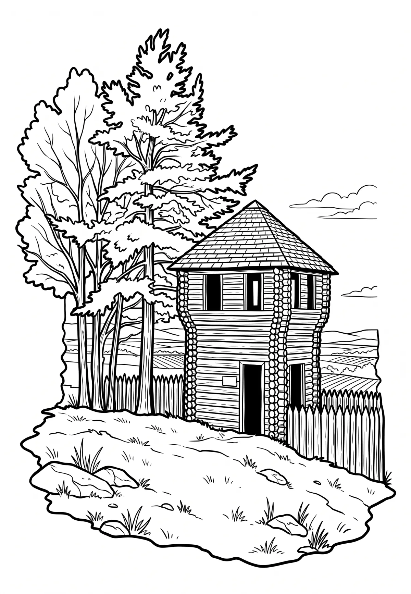

Rozhledna Rubín
Ústecký kraj · 352 m n. m.

technická památka · #065
Rubín je pravěké a raně středověké hradiště v jižní části Ústeckého kraje. Nachází se na stejnojmenném kopci u Dolánek, čtyři kilometry severovýchodně od Podbořan v okrese Louny. Pozůstatky hradiště jsou chráněny jako kulturní památka.